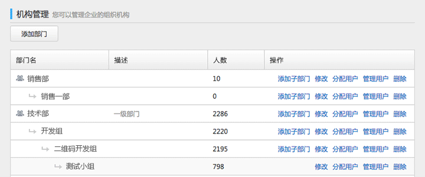
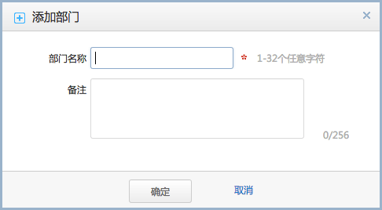
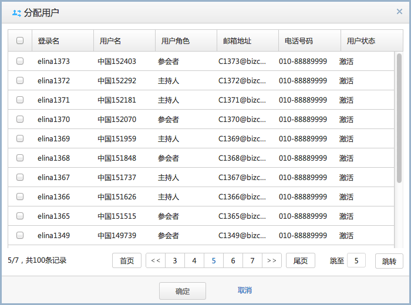

当企业有多个分支部门，需要通过分支部门来建立企业用户时，可以创建组织机构来对企业用户进行管理。
1. 选择“用户管理>机构管理”。
2. 点击“添加部门”。
3. 弹出部门信息界面。
4. 单击“确定”。
添加部门主要是用来建立一级部门而用。
1. 选择“用户管理>机构管理”。
2. 选择要增加的部门，在操作中点击“添加子部门”。
3. 弹出部门信息界面。
4. 点击“确定”。
可支持最多4级部门的创建。
1. 选择“用户管理>机构管理”。
2. 选择要添加用户的部门，在操作中点击“分配用户”。
3. 弹出用户列表，选择对应部门的企业用户。
4. 点击“确定”。
一个用户只能在一个部门中，如果分配到一个部门中，则在分配用户时，无法查看到此用户的信息。